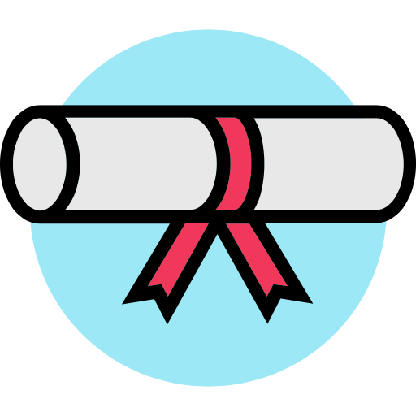
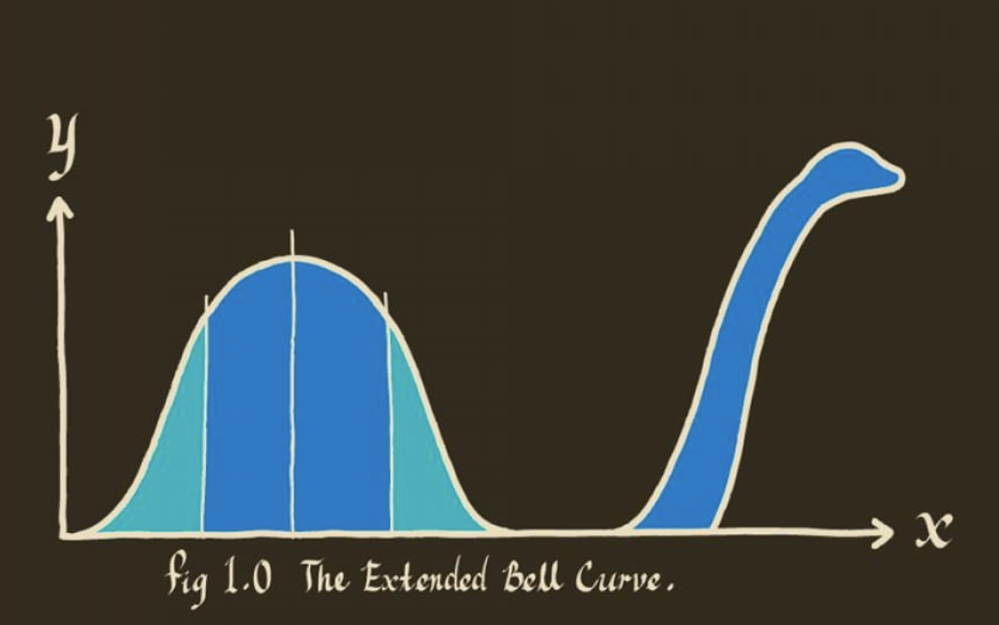

7th - 11th September, 2026
Let’s do a quick round of introductions
E.g.

Note that we are not able to provide any formal university credits (högskolepoäng). Many universities, however, recognize the attendance in our courses, and award 1.5 HPs, corresponding to 40h of studying. It is up to participants to clarify and arrange credit transfer with the relevant university department.
“If you torture the data long enough, it will confess to anything”
Ronald Coase, British Economist

Over the years, we have seen researchers struggle with:
In 2019, we started running this course to:
How can we learn from biological data while accounting for variation and uncertainty?
Probability & sampling
How much can observations and study results vary by chance?
↓
Statistical inference
How can we estimate, compare groups, and test hypotheses using a sample?
↓
Statistical models
How can we describe relationships between variables and account for multiple factors?
↓
More complex data and study designs
How do we analyse different types of outcomes, repeated measurements, high-dimensional data and time-to-event data?
Probability & distributions Statistical inference
Linear regression: Model fitting, assumptions & diagnostics
Statistical inference, cont.
Linear regression cont. Mixed-effects models
Survival analysis Multivariate methods (PCA)
Clustering Prediction in life sciences (primer)
Any questions?